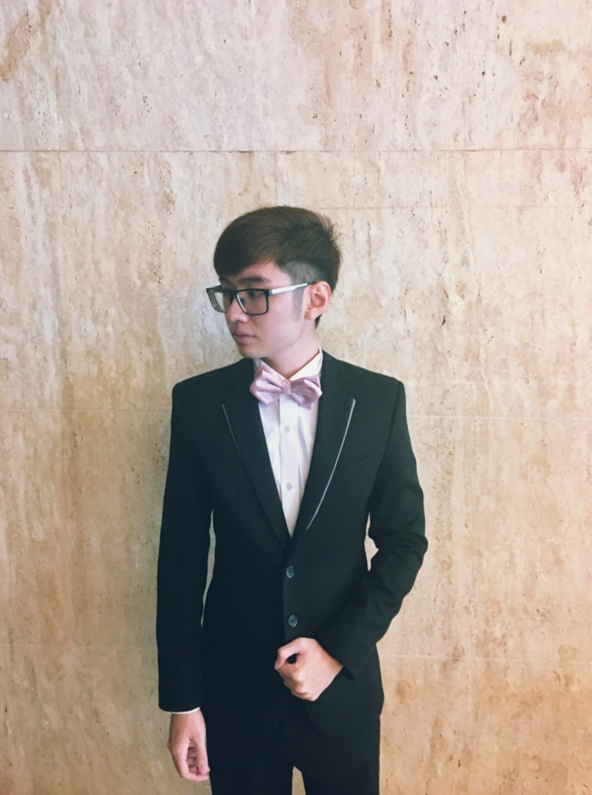
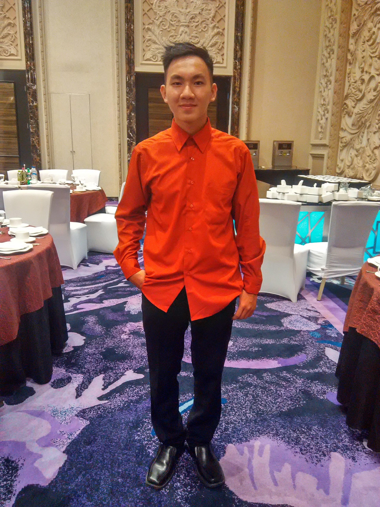
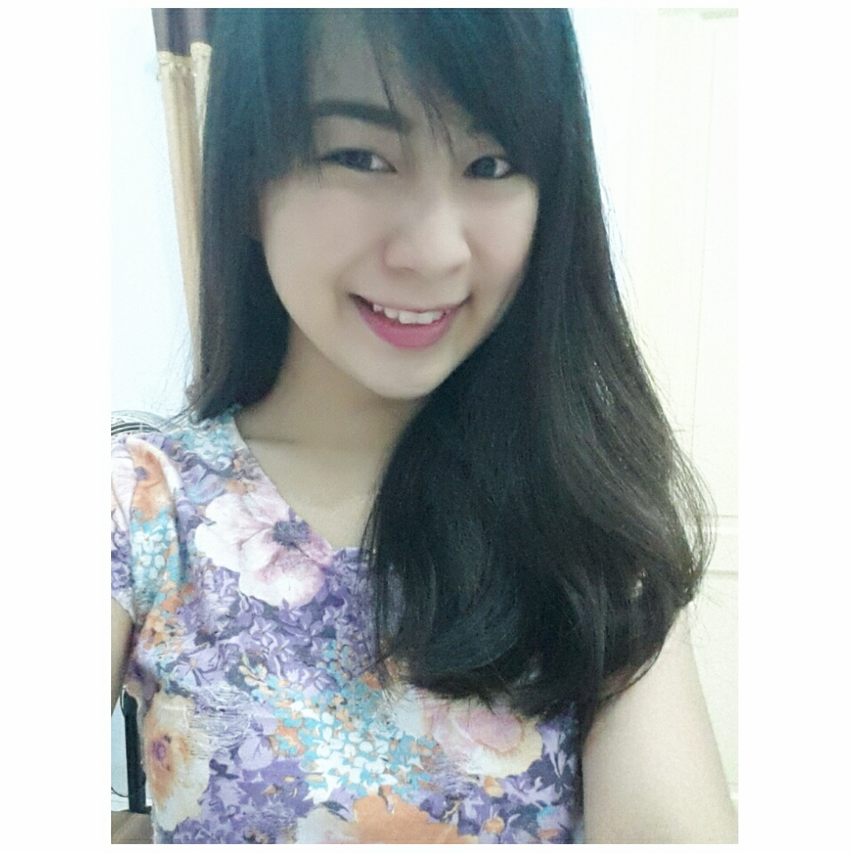

Hari Kathina
Kathina merupakan salah satu hari besar dan bersejarah dalam agama Buddha. Oleh karena itu sebagai sebuah UKM yang mewadahi mahasiswa/i buddhis di kampus, kami bekerja sama dengan Pemuda Buddhis Buddha Sassana menyelenggarakan “ Hari Kathina bersama ”. Dan tempat pelaksanaan di Klenteng Xian Ma

Baksos Hari Waisak
Menyambut Hari Tri Suci Waisak maka UKM Bodhivijja mengadakan Bakti Sosial kepada anak-anak panti asuhan dengan Tema “ Satu Langkah Kecil Berbagi Kebahagiaan ” . dan UKM Boddhivijja menyelenggarakan di Panti Asuhan Al Isyrah

Boddhivijja on Vacation
Acara ini diselenggarakan untuk menyambut mahasiswa baru angkatan 2015 khususnya yang beragama Buddha, disamping itu acara ini juga dimaksudkan agar dapat menjadi moment dimana senior dan junior bisa bersama-sama berkumpul dan saling mengakrabkan diri satu sama lain. dan boddhivijja on Vacation ini selalu diadakan setiap tahun.


Struktur Organisasi UKM Boddhivijja
Ketua: Swandy Wisang |
Wakil Ketua: Jason Pratama Sunarji |
Sekretaris: Willianto
|
Bendahara 1: Calista RuspandiBendahara 2: Jesslyn Chandra
|
Humas: Hendra Tan |
PubDom: Andy Wongso & Kevin Kwong |
Acara: Ilfan Diago |
Kerohanian: Kelvin Aurin J. |